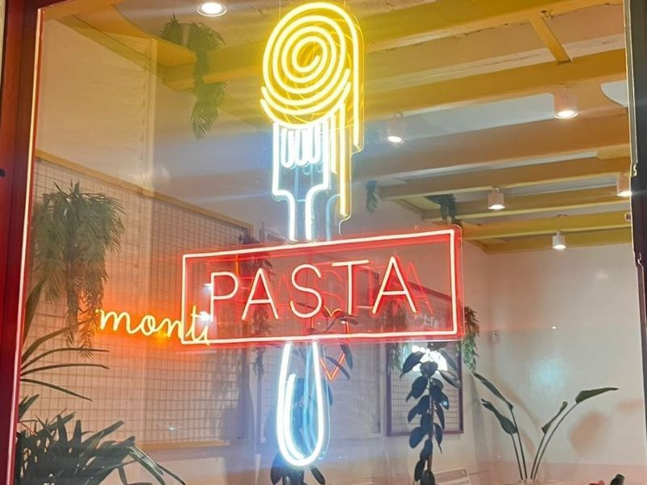

🍴Los Mejores Lugares para Comer

Orale Juanito
Especialidad: Cocina Mexicana
Dirección: Av. Revolución 123, Centro
Calificación: 4.8/5

Pasta & Basta
Especialidad: Cocina Italiana
Dirección: Calle Roma 456, Zona Rosa
Calificación: 4.5/5

Sushi Club
Especialidad: Sushi y Cocina Japonesa
Dirección: Blvd. Sakura 789, Colonia Japón
Calificación: 4.7/5